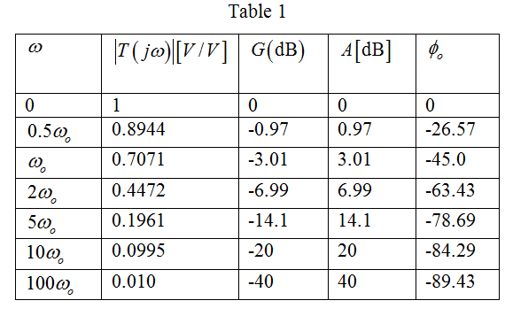

Calculate  for .
for .

Calculate  for
for  .
.
Calculate  for
for  .
.

Calculate  for
for  .
.
Similarly, calculate the values of for .
The transfer function of the first-order low pass filter is,
Here,
The magnitude of the transfer function is,
Thus, the magnitude of the transfer function is,
The phase angle of the transfer function is,
Thus, the phase angle of the transfer function is, .
The gain G is,
The attenuation is,
.
Calculate for .
Calculate for .
Calculate for .
Calculate for .
Similarly, calculate the values of for .
For different values of  , the values of
, the values of  are shown in Table 1:
are shown in Table 1:
